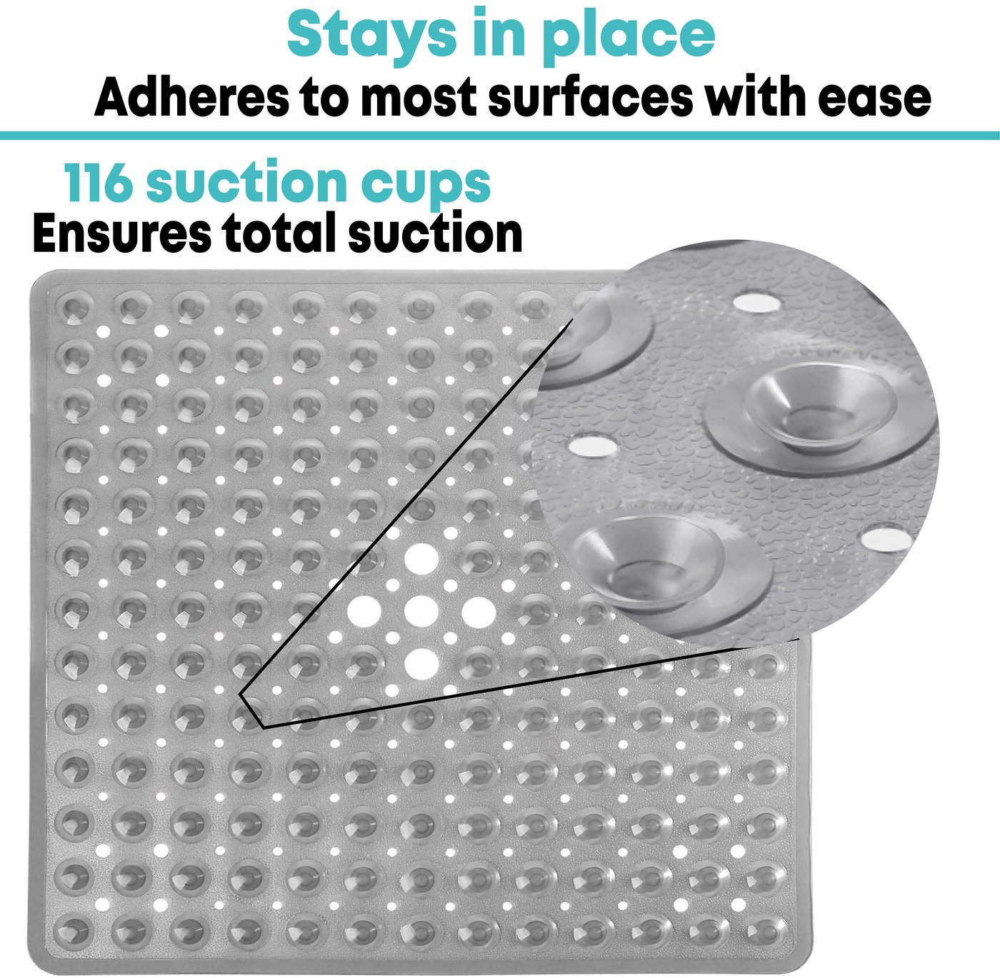
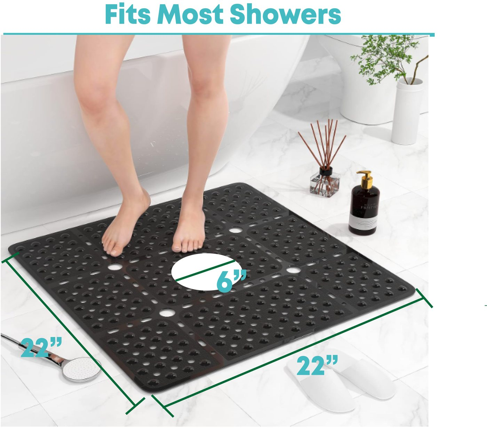
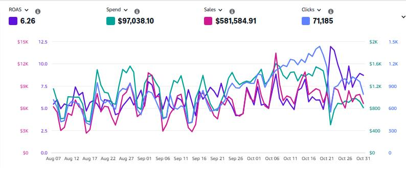
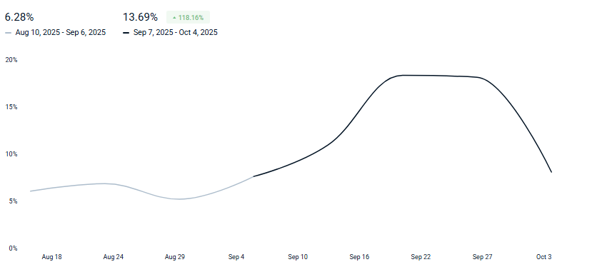
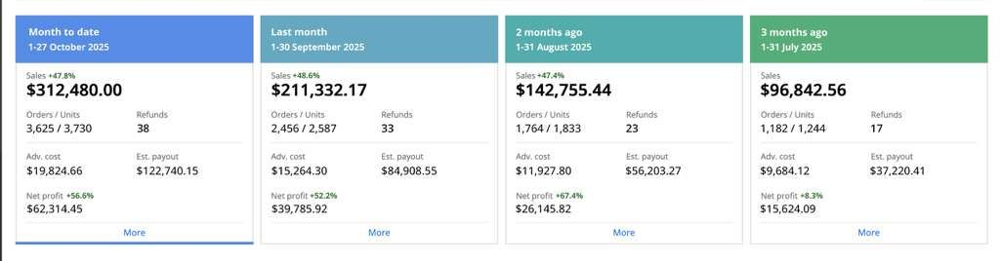
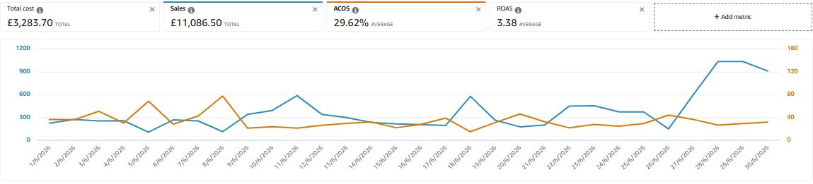
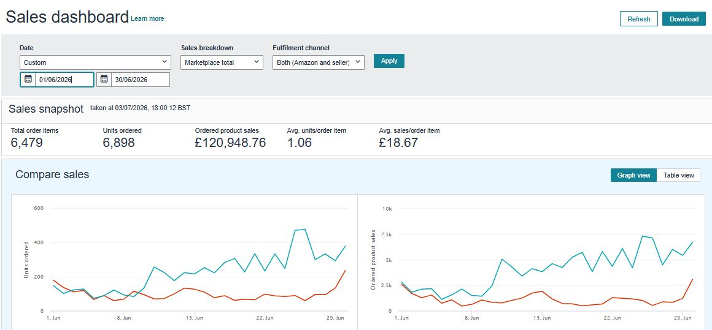

1. Análisis & Diagnóstico
Auditoría completa de listings, análisis de competencia (BI) y rendimiento de campañas (SEO, PPC, GEO). Identifico fugas de conversión y oportunidades de posicionamiento basadas en datos.
Cómo traduzco datos de mercado, listings y campañas en conversión y rentabilidad medible.
Auditoría completa de listings, análisis de competencia (BI) y rendimiento de campañas (SEO, PPC, GEO). Identifico fugas de conversión y oportunidades de posicionamiento basadas en datos.
Desarrollo de una estrategia de Tasa de Conversión (CRO). Optimizo el contenido (A+, Infografías), estructuro campañas de Ads y defino modelos de rentabilidad para cada producto.
Gestión activa, A/B testing y monitoreo de rendimiento. Ajusto pujas y segmentos para optimizar el ACOS/ROAS, asegurando un escalado rentable y sostenible.
Cinco videos construidos como piezas orientadas a la conversión para marketplaces. Cada pieza toma una barrera de compra —ajuste, peso, versatilidad, portabilidad o confort— y la transforma en una demostración visible, fácil de entender incluso sin sonido.
El sistema combina jerarquía de beneficios, prueba de producto, contexto de uso y tipografía para reducir incertidumbre y ayudar al comprador a evaluar el producto antes de llegar a la decisión.
Shulex VOC AI organizó el lenguaje de clientes en motivaciones, objeciones, expectativas y escenarios de uso. Esa evidencia se convirtió en un brief visual para responder preguntas concretas sobre succión, agarre, tamaño, drenaje y confort.
El caso muestra el flujo completo desde las tablas de sentimiento hasta las piezas terminadas, incluyendo los límites metodológicos y la validación necesaria antes de publicar afirmaciones de producto.


Ver caso completo ↗Un framework operativo que conecta pre-launch, lanzamiento, crecimiento y madurez. La lógica cambia según la etapa: primero eliminar dependencias y comprar aprendizaje; después escalar señales útiles; finalmente defender margen, conversión, visibilidad e inventario.
El caso muestra cómo transformar SEO, PPC, pricing, contenido, reviews, profit y stock en un solo sistema de decisiones.
Un sistema para definir qué debe hacer cada superficie del listing. El título construye relevancia, los bullets organizan beneficios, la galería aporta evidencia, el video explica secuencias y A+ profundiza la decisión.
El caso reemplaza la repetición por una narrativa modular: cada bloque responde una pregunta distinta del comprador y entrega contexto al siguiente.
En este caso trabajé sobre un portafolio maduro de ecommerce donde el problema no era simplemente “vender más”, sino entender qué parte del crecimiento venía de demanda real, qué parte dependía de inversión paga y qué parte podía sostenerse por mejoras estructurales en conversión, ranking orgánico y eficiencia comercial.
El enfoque fue construir una lectura de negocio antes que una lectura aislada de campañas. Crucé ventas semanales, tráfico orgánico, tráfico pago, conversión, rendimiento por producto y rentabilidad publicitaria para detectar dónde el sistema estaba ganando tracción y dónde solo estaba comprando volumen. A partir de esa lectura, el trabajo de PPC dejó de ser una administración de pujas y pasó a funcionar como un mecanismo de asignación de capital: invertir donde el margen, la intención de búsqueda y la probabilidad de conversión justificaban escalar.
El resultado fue una mejora simultánea de escala y calidad del tráfico. En la comparación semestral, las ventas retail crecieron 26,3%, el tráfico total creció 19,4% y el tráfico de Paid Search aumentó 119,4%, sin que el análisis se redujera a gastar más: el punto central fue usar BI para distinguir términos defendibles, productos con elasticidad positiva y zonas donde el presupuesto publicitario podía empujar ranking, conversión y ingresos incremental.
La hipótesis económica detrás del trabajo fue simple: en marketplaces competitivos, el crecimiento rentable aparece cuando la pauta, el contenido indexable, el pricing, la compatibilidad y la disponibilidad operan como un mismo sistema. Por eso el análisis no se limitó al ROAS inmediato, sino que miró el efecto de cada decisión sobre tráfico orgánico, tasa de conversión, cobertura de keywords y capacidad del portafolio para sostener ventas cuando baja la presión paga.

Auditoría y reestructuración de campañas, segmentación y contenido. Las comparaciones usan ventanas explícitas y se presentan como evidencia observacional.


Lectura mensual de ventas, publicidad y beneficio neto estimado para priorizar el portafolio por causa, oportunidad y riesgo.

Rediseño de seis imágenes para hacer visibles especificaciones, compatibilidad y beneficios. No se publica un cambio de conversión porque no existe una prueba controlada en el archivo.


Caso técnico sobre arquitectura PPC, presupuesto, inventario, promociones, A+ Content, Brand Store y catálogo, con una recuperación semanal contextualizada.


Estrategia de escalado de PPC para una cuenta de Hogar y Cocina en Amazon, con foco en preparar Prime Day, expandir la visibilidad rentable y convertir el crecimiento pago en mayor fuerza orgánica. La estrategia combinó campañas automáticas optimizadas, términos long-tail de alta conversión y microauditorías constantes de términos de búsqueda.
También se trabajó sobre el catálogo y la conversión: concentración del presupuesto en variaciones con mejor respuesta, mejora del BSR, análisis de mercado y mejora de las imágenes principales para que el incremento de tráfico no se perdiera por fricción en el listing.


"No entendíamos por qué caían las ventas. Matías analizó los datos, reestructuró las campañas y nuestro ROAS subió de 4,1 a 6,26 en 30 días. Su enfoque analítico es impecable."Gerente de Marketing, Marca A (Cliente de performance marketing)
"El rediseño de nuestras infografías y contenido A+ tuvo un impacto directo en la tasa de conversión. Matías entiende cómo usar el diseño para comunicar valor y vender."Fundador, Marca Z (Cliente de CRO y diseño)
Estoy disponible para proyectos freelance y colaboraciones.
Enviar un Email LinkedIn